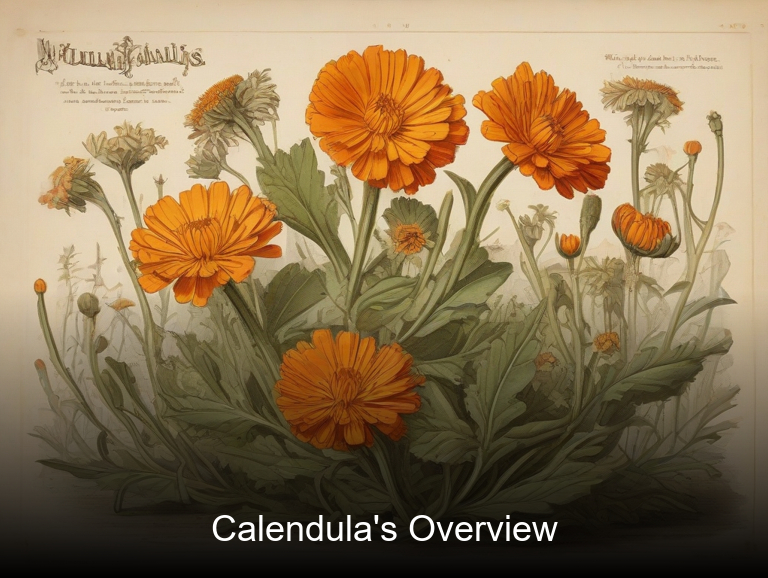
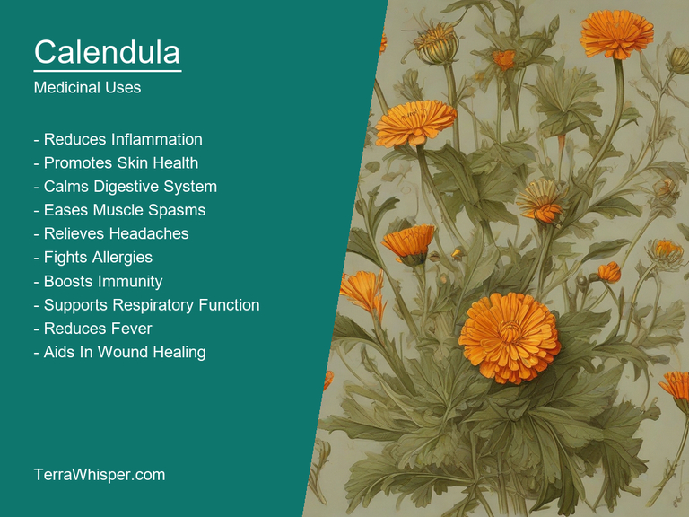
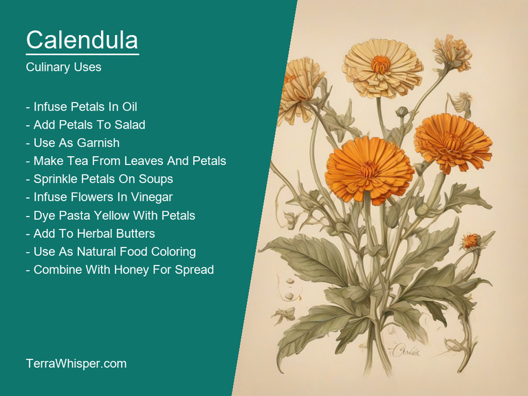
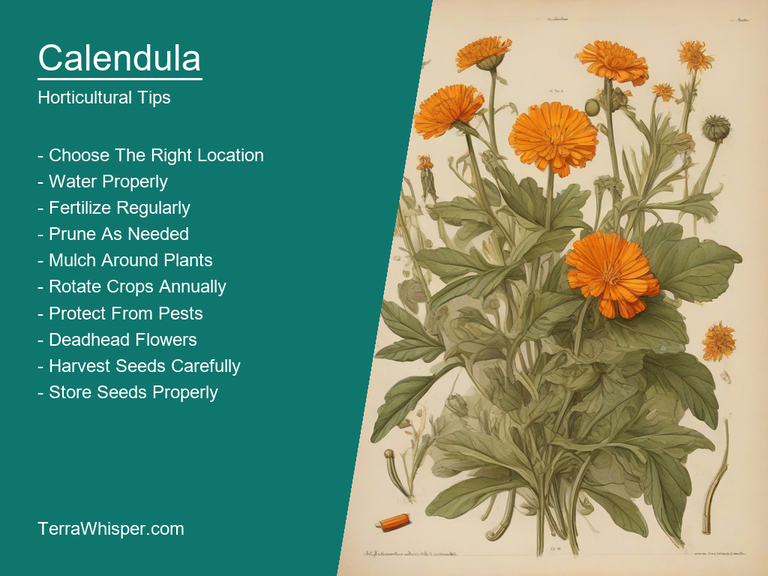
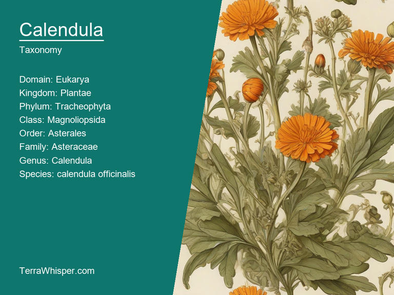
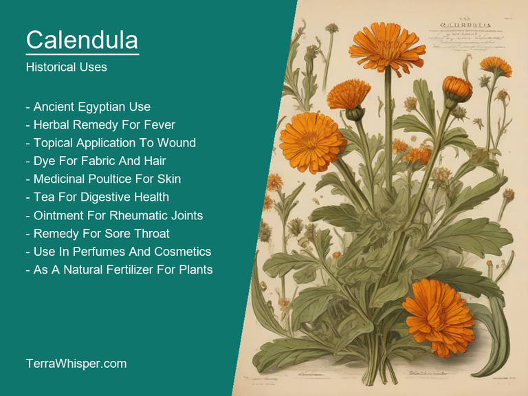

Calendula, scientifically known as Calendula officinalis, is a popular herb in both culinary and medicinal applications. It is often used to treat minor wounds and skin irritations due to its anti-inflammatory properties. In addition, calendula is added to various dishes, particularly salads, for its distinct peppery taste.
The horticultural aspects of Calendula officinalis are quite impressive. This plant has large, bright orange or yellow flowers that bloom throughout the year and attract pollinators such as bees and butterflies. It prefers full sun and well-drained soil, making it an ideal choice for gardeners looking to add a touch of color to their landscape.
Calendula officinalis holds a significant place in botanical history. Native to the Mediterranean region, this plant has been used by humans for centuries. Ancient Greeks and Romans employed calendula as an effective healing agent while medieval Europeans utilized it in traditional medicine. Today, calendula remains popular among herbalists and homeopathic practitioners alike.
In this article, you will discover what are the medicinal and culinary uses of calendula. Then, you'll learn how to cultivate it, what is its botanical profile, and how it was used historically.
Calendula (Calendula officinalis) has many health benefits, including its ability to improve skin conditions, aid in healing wounds and help soothe inflammation. This flowering plant is known for its antimicrobial properties which help in treating various infections. It also contains high amounts of antioxidants that help combat free radicals and reduce signs of aging by preserving the elasticity and reducing oxidative stress on skin cells.
The following illustration lists the most important uses of calendula in medicine.

Calendula's medicinal effects stem from its diverse array of constituents, such as flavonoids (including quercetin), terpenes, carotenoids like carotenes and xanthophylls, essential oils, triterpenoid saponins, polysaccharides, triterpene glycosides, coumarins, phenolic acids, and volatile components including the esters of benzoic acid.
The most commonly used parts of Calendula plants for medicinal purposes include flowers and leaves. Traditional herbal medicine frequently uses these parts to prepare various remedies such as ointments, creams, gels, tinctures, lotions, and teas. These preparations can be applied topically on the skin or taken internally in forms like capsules or powders to experience Calendula's therapeutic effects.
Although Calendula is generally safe for most people, some potential side effects may occur under rare conditions. For instance, individuals with allergies to plants in the Asteraceae family, also known as Compositae (including daisies and ragweed), might experience an allergic reaction upon using Calendula. Additionally, it's essential to be cautious about applying Calendula-based products on sensitive areas or open wounds without consulting a healthcare professional.
To ensure the best results and minimize risks, certain precautions should be taken when using Calendula medicinally. Firstly, consult with your doctor before incorporating it into any treatment plan, especially if you have pre-existing medical conditions or are taking medications. Secondly, follow the dosage recommendations provided on product labels and avoid overuse to prevent potential side effects. Lastly, always purchase Calendula products from reputable sources to ensure their quality and safety.
As a master chef, you are always on the lookout for exciting new ingredients that can elevate your dishes to new heights. One such ingredient is calendula (Calendula officinalis), also known as pot marigold or English marigold. This beautiful flower has long been used in traditional medicine for its anti-inflammatory and antioxidant properties, but it also offers a unique flavor profile that can add depth to your culinary creations.
The following illustration lists the most common uses of calendula for culinary purposes.

Calendula is primarily used as an edible garnish or decoration due to its vibrant orange and yellow petals. These flowers are often added raw or cooked to salads, soups, stews, risottos, and pasta dishes for their mildly spicy, slightly bitter taste. They can also be infused in oil, vinegar, butter, and sugar to create flavorful condiments like salad dressings, marinades, and glazes. Calendula petals are even used as natural food coloring due to their bright hue.
The taste of calendula can be described as a blend of peppery, slightly bitter, and slightly sweet flavors with hints of orange. The flowers have a mild aroma that complements many dishes without overpowering them. They work particularly well in savory dishes where their unique flavor adds complexity and depth.
While the entire flower is edible, the petals are typically used for culinary purposes. However, young leaves can also be consumed, though they tend to have a stronger bitter taste than the petals. It's essential to use organically grown calendula flowers, as those grown with pesticides may contain residues that could harm consumers.
To incorporate calendula into your dishes, start by using fresh petals for maximum flavor and visual impact. Add them towards the end of cooking so they retain their vibrant color and texture. When infusing oils or vinegars, use a ratio of one part dried calendula petals to four parts oil or vinegar and let it steep for several weeks before straining and using.
While calendula is generally considered safe for human consumption when used in small quantities as an ingredient, excessive consumption may cause stomach upset, nausea, vomiting, or diarrhea. As with any new ingredient, it's best to introduce calendula slowly into your diet and monitor how your body responds before incorporating it more frequently.
Firstly, sow the seeds directly into well-drained soil in full sun position in spring or early autumn. The ideal temperature for germination ranges between 15°C (60°F) and 24°C (75°F). Space them about 30 centimeters apart for good air circulation and to prevent diseases like powdery mildew.
The following illustration lists the most important tips to cutlitvate calendula.

To provide optimal growing conditions, ensure the soil is rich in organic matter and maintains consistent moisture levels. Watering deeply once a week should suffice, but avoid overwatering as this can lead to root rot. Fertilize with a balanced organic fertilizer every four weeks during the growing season to encourage healthy growth and vibrant blooms.
Once established, calendula requires minimal maintenance besides occasional weeding and deadheading spent flowers to promote further blossoming. As an added bonus, these hardy plants are resistant to pests and diseases, making them perfect for beginners or busy gardeners. Incorporate calendula into your garden design by planting it alongside vegetables like tomatoes and broccoli, whose growth may be deterred by marigolds' strong scent. Alternatively, use calendula in borders, containers, or as a groundcover where its cheerful blooms will add color and charm throughout the season.
Calendula, with botanical name Calendula officinalis, belongs to the domain Eukarya, kingdom Plantae, phylum Tracheophyta, class Magnoliopsida, order Asterales, family Asteraceae, genus Calendula, and species officinalis. Common names include pot marigold and English marigold.
The following illustration display the botanical profile of calendula.

Calendula variants include Calendula arvensis, which has a more erect growth habit and smaller flowers compared to the common Calendula officinalis, and Calendula x hybrida, which is a hybrid between C. officinalis and C. arvensis and usually exhibits a taller stature and larger blooms.
The morphology of Calendula officinalis includes a branching herbaceous perennial plant, usually growing up to 60 cm tall. It has lanceolate-oblanceolate leaves that are arranged alternately on the stem. The flowers are typically yellow with a diameter of about 2 to 3 cm and have both ray and disc florets surrounded by numerous golden petals.
Geographic distribution of Calendula officinalis is widespread, found in Europe, Asia, and North Africa. It prefers well-drained soil and full sun to partial shade. The natural habitats include meadows, fields, roadsides, and waste places.
Calendula's life cycle consists of an annual growth pattern. It germinates in spring, grows throughout the summer months, and produces flowers that bloom from June until October. After seed maturation, the plant dies back in autumn. The seeds can remain dormant for several years before germinating when conditions are favorable.
The origin of "Calendula" comes from Latin words calere and dies which mean 'to grow warm or shine brightly; to thrive (plant); day'. Calendar is also derived from the same source meaning something similar in regards to organizing, following seasons according days. In a broader sense it stands for systematic enumeration of regular orderliness like annual festivities etc., hence representing stability and predictability that we are still dependent on today even with modern advancements in timekeeping systems. Calendula was also known as Marigold which is derived from the Old French word 'margerole' meaning daisy (like its petal shapes), or possibly a corruption of 'mary gold'.
The following illustration lists the most well known historical uses of calendula.

The cultural importance attributed to it are vast and varied. Calendula has been historically linked with love, fertility; but also protection against evil spirits as well, signifying purity because of their golden color which is said can even enhance psychic abilities - both these attributes have resulted in its use for various rituals such wedding ceremonies or other rites intended to bring good fortune and joy. In certain communities Calendula flowers were symbolised happiness during occasions like New Year's Eve where people would decorate trees by hanging them among berries creating an environment full of hope, new beginnings & prosperity ahead - making it a significant part in many festive celebrations across different ethnic backgrounds around the world.
Various mythologies and legends associated with Calendula plants are also prevalent worldwide due to its golden appearance being linked symbolically not just beauty but power too, hence why several goddesses were thought responsible for blessing or protecting gardens having such beautiful blooms including Persephone in Greek Mythology who is said have used these flowers as an emblem on the gates of Hades when she returned from her underworld sojourn bringing seeds among other things back with them to enrich earth's landscape while establishing peace amongst its inhabitants.
Calendula has also made notable appearances in many forms across literature throughout history, whether as part descriptions within works or being referenced symbolically by authors writing of human characters either weaving stories around these flowers' significance like John Steinbeck who mentioned them briefly yet powerfully while narrating a moment about the importance people placed on nature and its beauty.
Calendula were valued in folkloristic beliefs as well where they held various uses such that believed wearing wreaths or crowns made up with these flowers could protect against malicious spells, bring prosperity into your home by hanging them over doorways and even treating minor wounds because their properties had antiseptic qualities. They were also used for healing in certain societies which demonstrates the widespread recognition of its beneficial nature throughout history making it a plant truly valued beyond aesthetics alone but rather as an integral part within various cultures across eras sharing similarities despite geographic location differences highlighting how deeply rooted human kind has always been connected to plants.